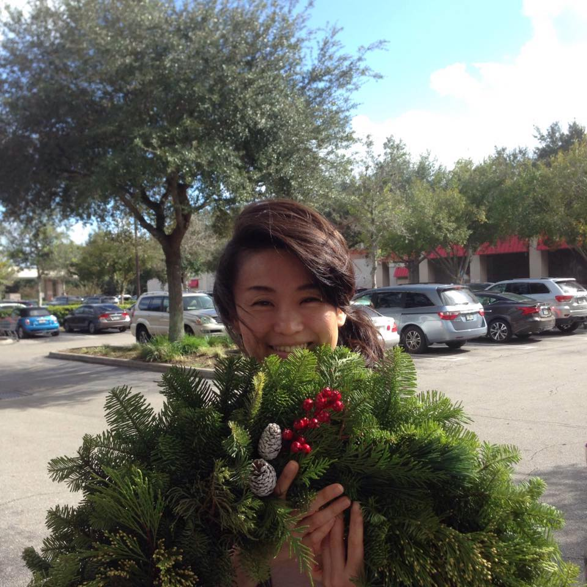

About Me
Welcome to my BIO site!
My name is Hitomi. I was working for IT companies after graduating collage as COBOL programer and IT technical engineer for EBS Financial applications.
In 2014 I was offerred the chance for an internal transfer with my global company and took this opportunity to move to the US from Japan.
I was a Oracle Customer Support Technical Engineer for Oracle EBS (All Financial Products) for 9.5 years in total after being a COBOL Programmer for 3 years.
Then I worked as a System Engineer for 4 years in SIers working on EBS Add-on and Maintenance. Later, I worked as a Technical Support Representative skilled at analyzing complex customer's issues with focus on their satisfaction and good experience.
My Motto is to keep improving myself and moving forward in life. In 2018 I started to learn coding to step up in my career for the field of web development.
For a personal aspect, I love Snowboarding and Bodyboarding and I used to go to the beach and the mountain during the same weekends in Japan.
Anyway, I'm enjoying my life here, recently many new restaurants have opened (I love to eat!) which always make me very happy! For example, "JINYA RAMEN BAR" is a new place I want to go to as soon as possile!